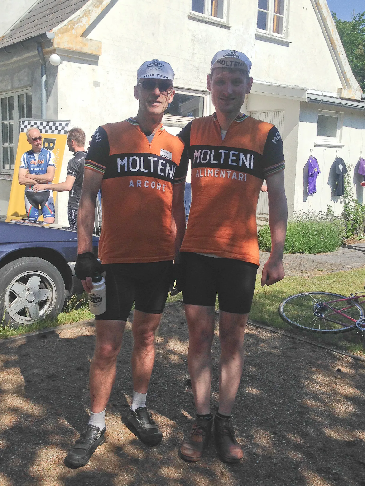
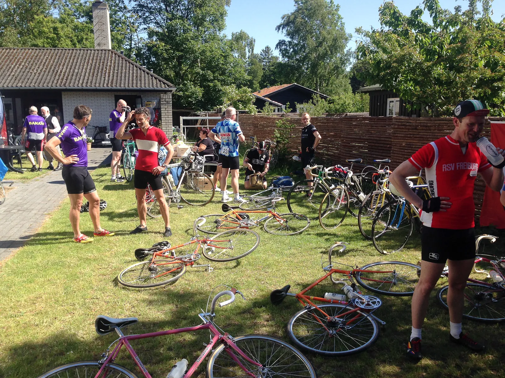

Squadra Molteni på podiet ved Banani Klassikerløbet 2015

Eigil Leegaard kørte sig til tredje plads ved Banani Klassiker Løbet 2015. Med det blev en højdramatisk afslutning, der kostede Eigil “Delgado” Leegaard en placering i finalen.
Eigil “Delgado” Leegaard måtte lave en undvigemanøvre på et kritisk tidspunkt i finalen – og mistede dermed en enkelt plads i dagens løb.

Finalen blev hektisk, da en BMW kom i vejen, og blokerede Eigil, som måtte lave en katastrofe-undviemanøvre og køre indenom bilen.
Banani-rytter vandt spurten og Banani Klassikerløbet 2015
BMW’en der på uheldigste vis “blandede” sig i finalen, kørte lige så hurtigt væk, som dem kom.
Men Eigils falkeblik nåede at opsnappe, at føreren var iført noget der umiskendeligt kunne minde om en Banani cap i samme farve som vinders trøjefarve. Hmmm.
Uofficiel dansk rekord i slangeskift
Moltenis løjtnant Kasper Sørensen kom godt fra start. Lå helt fremme, men var så uheldig at punktere efter kun fem km.
Frontgruppen forsvandt ud af syne inden Kasper havde nået at smide en ny slange i dækket.
Men efter et ekstremt hurtigt slangeskift (uofficielt ny dansk rekord på 1:37 min.) fortsatte han og indledte jagten på frontgruppen.
Hjælpende hånd fra Del Tongo
Kasper køre alene igennem resterne af hovedfeltet. Dog gav en Del Tongo en hjælpende hånd på et kritisk tidspunkt, hvor Kasper var på vej ud af det røde felt.
Del Tongo rytteren har længe ligget i forhandlinger med Squadra Molteni, men nu kan blækket vidst snart sættes til tørre.
Kasper fortsatte for fuld skrue, og på pavéerne kom blodsmagen for alvor frem. Men han hentede aldrig de forreste.
Moltenis unge løjtnant kom ind på en femte ærefuld plads kun godt 1:30 efter minutter efter vinderen.

Ledelsen tilfreds med indsatsen
Fra Squadra Moltenis hovedkvarter i Vejle, hvor holdejerne var optaget af sponsorpleje og rekognoscering i Vejle Ådal.
– Det er med tilfredshed, at vi hører, at Eigil Delgardo” Leegaard endelig har præsteret noget for sin løn,” lyder det tørt fra Niels Bjørnsteen.
Og ærgerligt, at vores unge løjtnant Kasper Sørensen fik defekt.
Men jeg noterer mig, at han kæmpede en brav kamp. Det kan ikke vare længe før han er klar til en kaptajnuddannelse, udtaler Per K. Hansen